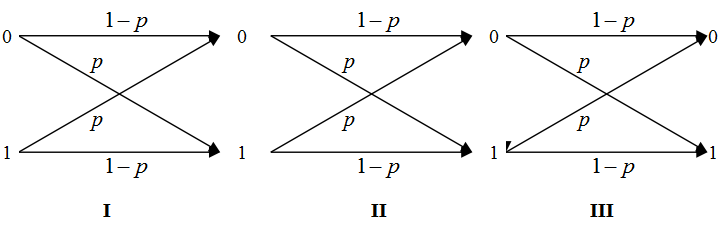
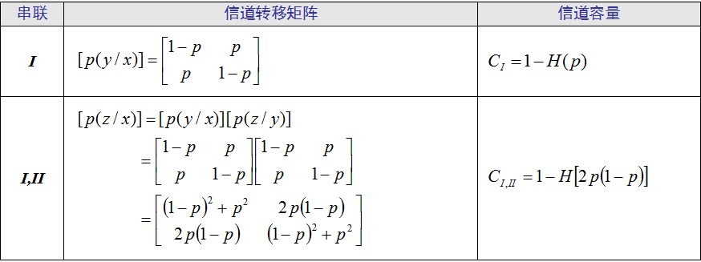
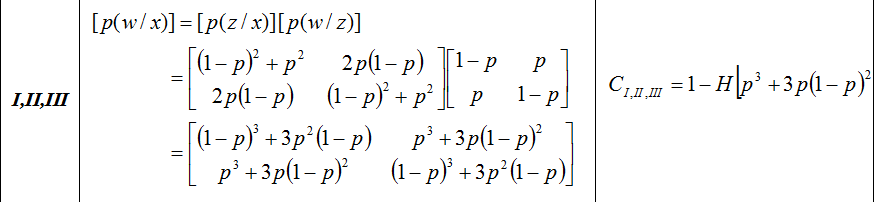
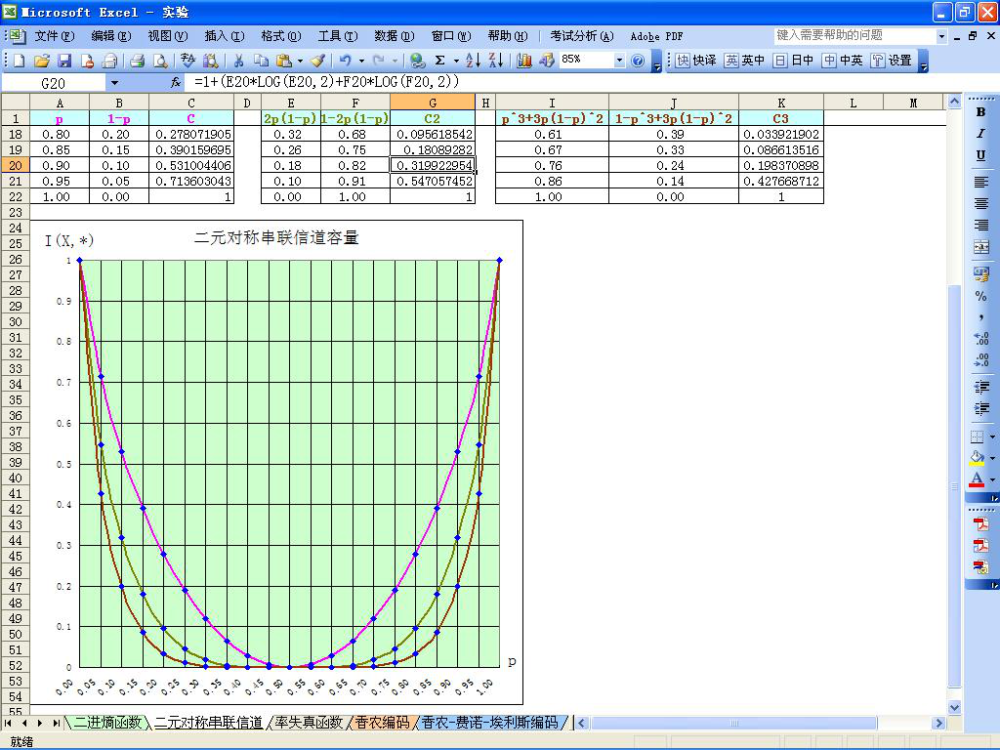
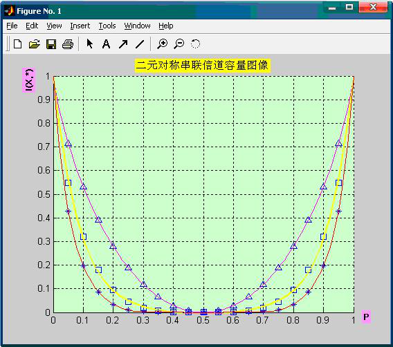

实验五、串联信道容量函数曲线绘制
一、实验内容
用 Excel 或 Matlab 制作串联信道容量曲线。
二、实验环境
- 计算机
- Windows 2000 或以上
- Microsoft Office XP 或以上
- Matlab 6.5 或以上
三、实验目的
- 掌握 Excel 的数据填充、公式运算和图表制作
- 掌握 Matlab 绘图函数
- 掌握、理解串联信道的信道容量结论
四、实验要求
- 提前预习实验，认真阅读实验原理以及相应的参考书。
- 认真高效的完成实验，实验中服从实验室管理人员以及实验指导老师的管理。
- 认真填写实验报告。
五、实验原理
Excel 的图表功能（略），串联信道的信道容量（下图）。参考《信息论——基础理论及应用》的 124 页。
  
六、实验地址
七、实验结果
在 Excel 中绘制的函数曲线图，请参考下图。

在 Matlab 中绘制的函数曲线图，请参考下图。
